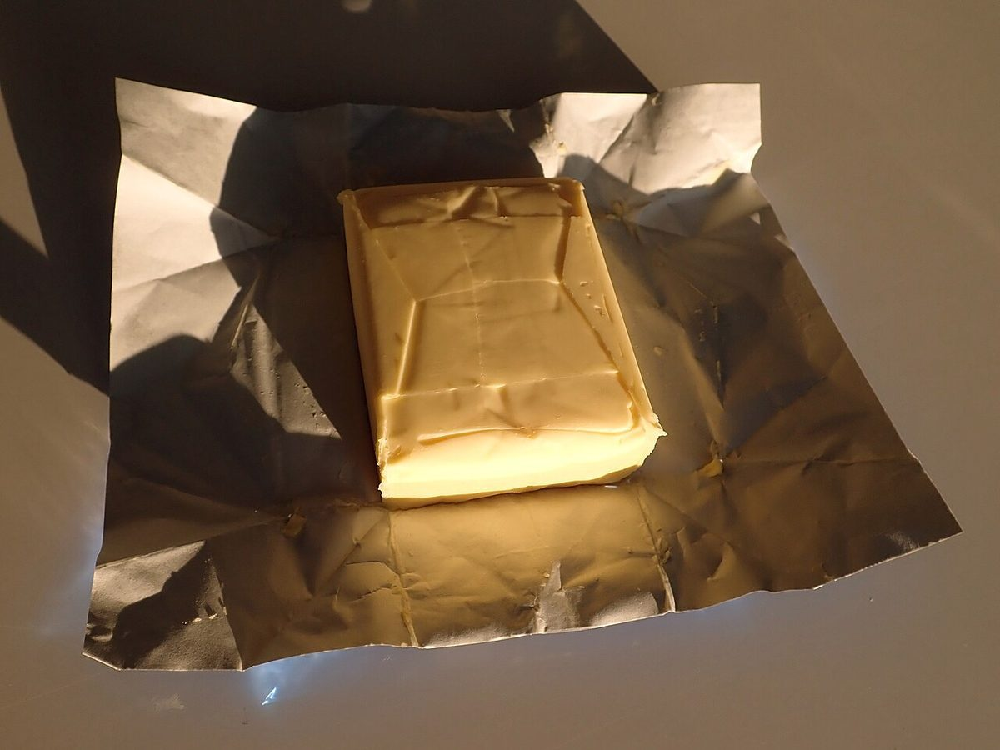
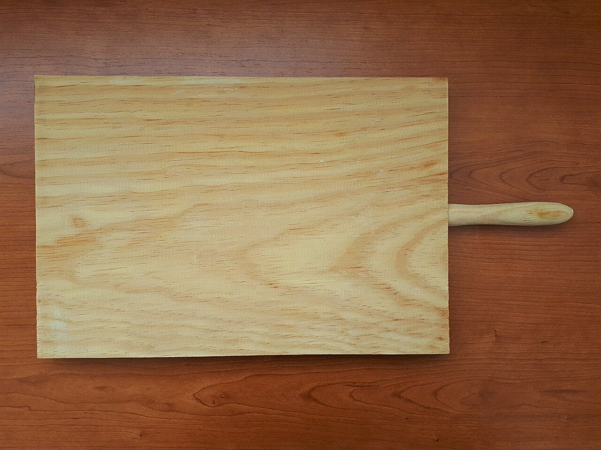

2 教科の欄(メニュー)
この欄は、準備中。
メニューと価格は準備中です。確認でき次第、ここに書き込みます。
| メニュー | 準備中 |
|---|---|
| 価格 | 準備中 |
| ご予約 | 準備中 |
| ひとこと |
空欄のまま、
そっと置いておきます。
ほめ言葉カード
空欄のかわりに、5枚。
下の写真は、ほめ言葉を添えるためのフリー素材のイメージです。お店で提供しているものではなく、提供メニューを示すものでもありません。

写真はイメージです ぴしっ

写真はイメージです きっちり

写真はイメージです まんまる

写真はイメージです つやぴか

写真はイメージです すべすべ